Le matos pour GTA 6
GTA 6 pèse jusqu'à 212 Go et se joue des heures d'affilée. Voici ce qui change vraiment ton expérience, et surtout les critères à vérifier avant d'acheter, pour ne pas te faire avoir.
Tu cherches un cadeau pour un fan ? Va voir nos idées cadeaux GTA 6 pour Noël.
L'essentiel
Le minimum utile : de la place pour installer le jeu (SSD M.2 sur PS5, carte d'extension sur Xbox Series), un casque et une deuxième manette chargée. Tout le reste est du confort.
Transparence : certains liens de cette page sont des liens affiliés. Si tu achètes après avoir cliqué, GTASTUCE VICE touche une petite commission, sans que ça te coûte plus cher. C'est ce qui nous permet de rester gratuits. On ne recommande que des critères qu'on vérifierait pour nous-mêmes. En tant que Partenaire Amazon, GTASTUCE VICE réalise un bénéfice sur les achats remplissant les conditions requises. Les prix et la disponibilité sont ceux affichés par le vendeur au moment de ta visite. Site non affilié à Sony ni à Microsoft.
Le jeu
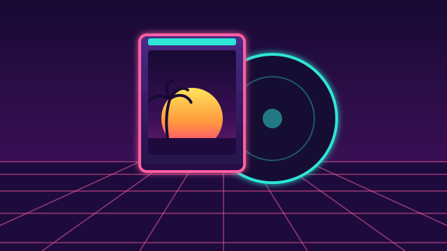
GTA 6 sur PS5 ou Xbox Series
Le jeu existe uniquement sur PS5 et Xbox Series X|S. Vérifie la plateforme écrite sur la boîte avant de commander.
- Pas de version PS4, Xbox One ni PC.
- Sur Xbox One, tu peux seulement y jouer en streaming via le cloud, à condition d'acheter le jeu : notre article.
- Même en boîte, le jeu s'installe sur la console : prévois la place (voir Stockage).
Stockage

Un SSD M.2 pour la PS5
Avec un jeu aussi lourd, la mémoire interne de la PS5 sature vite. Un SSD M.2 se glisse dans le port d'extension de la console et se joue aussi vite que le stockage d'origine.
- Type : M.2 NVMe PCIe Gen4 x4. Les SSD M.2 SATA ne marchent pas.
- Vitesse : au moins 5 500 Mo/s en lecture séquentielle, c'est le minimum demandé par Sony.
- Dissipateur : obligatoire. Prends un modèle « avec dissipateur » vendu compatible PS5, sinon il ne rentrera pas.
- Format : 2280, c'est le plus courant et il est compatible.
- Capacité : 1 To est le bon compromis. 2 To si tu gardes beaucoup de jeux.
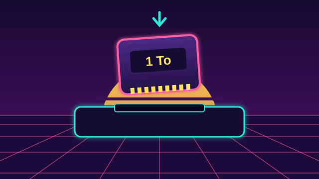
Une carte d'extension pour Xbox Series
Sur Xbox Series X|S, l'équivalent du SSD, c'est la carte d'extension de stockage, qui se branche à l'arrière de la console.
- Prends un modèle officiellement compatible Xbox Series X|S : c'est le seul moyen d'ajouter du stockage sur lequel tu peux jouer directement.
- 1 To est le bon compromis, 2 To si tu gardes beaucoup de jeux installés.
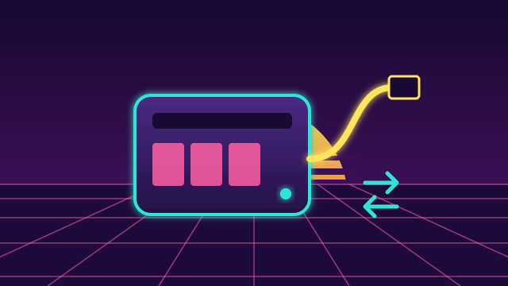
Un disque dur USB pour ranger tes jeux
Moins cher qu'un SSD, il sert d'entrepôt : tu y ranges les jeux que tu ne joues pas en ce moment, et tu les recopies au lieu de tout retélécharger.
- Un jeu PS5 ou Xbox Series stocké sur un disque USB doit être recopié sur le stockage interne (ou le SSD, la carte d'extension) pour être joué.
- Prends un modèle USB 3 (USB 5 Gb/s ou plus).
- Un disque dur classique suffit pour ce rôle d'entrepôt ; inutile de payer un SSD externe.
Audio
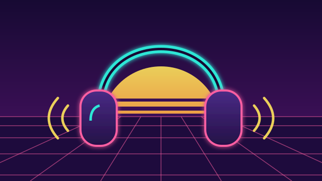
Un casque pour l'audio 3D sur PS5
Sur PS5, GTA 6 profite de l'audio 3D : avec un casque, tu entends d'où viennent les sirènes, les tirs et les moteurs. Pour semer la police, ça change tout.
- N'importe quel casque stéréo filaire branché sur la manette suffit pour l'audio 3D.
- Sans fil : vérifie qu'il est bien compatible PS5 et que la batterie tient au moins 20 heures.
- Un micro correct si tu joues avec tes potes.
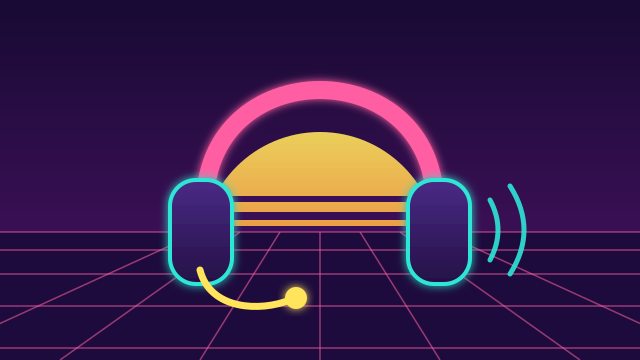
Un casque pour Xbox Series
Un casque t'aide à repérer d'où viennent les sirènes et les tirs, et à jouer tard sans réveiller tout le monde.
- Filaire : il se branche sur la prise jack de la manette Xbox Series.
- Sans fil : prends un modèle vendu compatible Xbox. Beaucoup de casques sans fil « PS5 » ne marchent pas sur Xbox, vérifie la fiche.
- Batterie d'au moins 20 heures si tu enchaînes les longues sessions.
Manettes

La DualSense édition limitée GTA VI
Deux DualSense aux couleurs de Vice City, une noire et une blanche, à 84,99 € chacune. Mêmes fonctions qu'une DualSense classique.
Source : iPhoneSoft
- La noire est vendue en France uniquement sur PlayStation Direct ; la blanche aussi chez certains revendeurs.
- En cas de rupture, évite les revendeurs qui la proposent bien plus cher.
Une deuxième DualSense et de quoi la charger
Les longues sessions vident la batterie de la DualSense. Une deuxième manette chargée, c'est zéro pause forcée.
- Une deuxième DualSense officielle, à faire tourner avec la première.
- Une station de charge double, pour poser les manettes et les retrouver pleines.
- Astuce gratuite : baisse l'intensité des vibrations dans les réglages, ça fait durer la batterie plus longtemps.
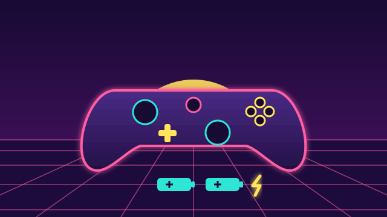
Une manette Xbox et des piles rechargeables
La manette Xbox fonctionne avec des piles AA. Pour ne pas en racheter sans arrêt, passe aux piles rechargeables ou à un kit batterie.
- Piles AA rechargeables + chargeur : la solution la moins chère.
- Kit batterie rechargeable : tu recharges la manette avec un câble, sans sortir les piles.
- La manette Xbox est aussi reconnue directement par Windows, si tu joues sur PC.
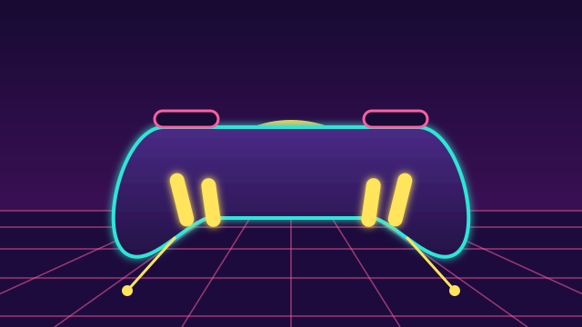
Une manette pro à palettes
Les palettes à l'arrière permettent d'agir sans lâcher le stick droit : pratique pour conduire et viser en même temps.
- Sur PS5 : la DualSense Edge, manette officielle de Sony.
- Sur Xbox : la manette Elite Series 2, manette officielle de Microsoft.
- Chères : ça vaut le coup surtout si tu joues beaucoup.
Écran et réseau
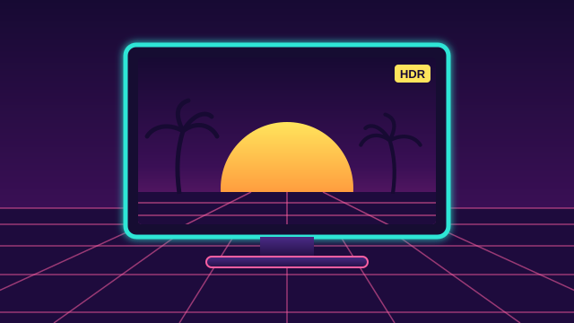
Un écran avec HDR et mode Jeu
GTA 6 tourne à 30 images par seconde sur toutes les consoles (notre article). Ce qui compte pour ce jeu, c'est le HDR et un écran réactif, pas les 120 Hz.
- HDR : les couchers de soleil de Vice City en profitent. Active-le dans la console (voir nos réglages PS5).
- Mode Jeu (ou ALLM, qui l'active tout seul) : il réduit le temps de réponse.
- 120 Hz : sans intérêt pour GTA 6 en 30 images par seconde ; utile seulement pour d'autres jeux.
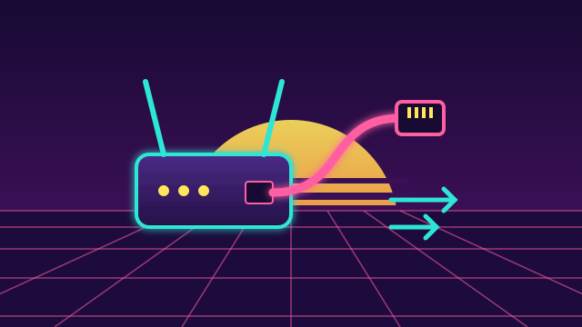
Un câble Ethernet ou un kit CPL
Le jeu pèse jusqu'à 212 Go, sans compter les mises à jour. En filaire, le téléchargement est souvent plus rapide et plus stable qu'en Wi-Fi.
- Console proche de la box : un câble Ethernet catégorie 6, de la bonne longueur.
- Console loin de la box : un kit CPL fait passer internet par les prises électriques.
- Branche les boîtiers CPL directement au mur, pas sur une multiprise.
Créer du contenu
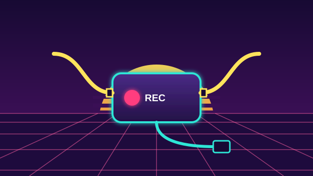
Une carte d'acquisition pour filmer tes parties
Pour enregistrer de longues sessions en bonne qualité, ou streamer avec un PC, une carte d'acquisition se place entre la console et la télé.
- Passthrough 4K HDR : l'image arrive intacte sur ta télé pendant que tu enregistres.
- Enregistrement 1080p à 60 i/s : largement suffisant pour TikTok, Instagram et YouTube Shorts.
- Sur PS5 : désactive le HDCP dans les paramètres HDMI de la console, sinon l'image enregistrée reste noire.
- Pour quelques clips, le bouton de capture de la manette suffit, gratuitement.
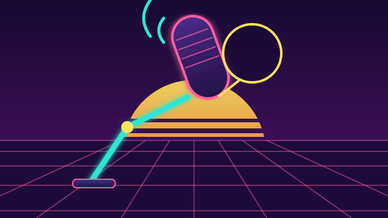
Un micro USB pour tes vidéos
Pour commenter tes parties, le son compte plus que l'image : un bon micro USB fait une vraie différence.
- USB : il se branche directement au PC, sans carte son.
- Cardioïde : il capte surtout ta voix, moins les bruits de la pièce.
- Un bras articulé et une bonnette anti-pop si tu parles près du micro.
Et sur PC ?
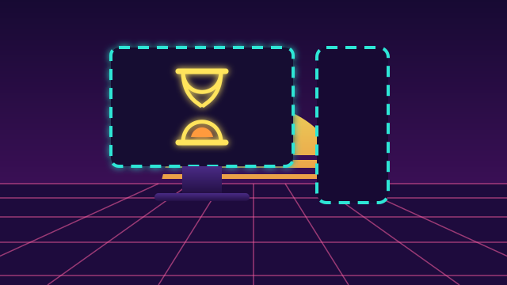
GTA 6 sur PC : pas encore annoncé
Rockstar n'a annoncé aucune version PC. Selon GamesBeat, elle viserait le premier trimestre 2027, mais ce n'est pas officiel.
Source : Dexerto, d'après GamesBeat
- Il n'existe aucune configuration requise officielle : n'achète pas de carte graphique ni de processeur « pour GTA 6 » maintenant.
- Ce qui sert déjà sur PC : une manette (celle de la Xbox est reconnue par Windows) et un câble Ethernet.
- On mettra cette section à jour dès une annonce de Rockstar.
Pas sûr de ce qu'il te faut ? Lis aussi notre guide des réglages PS5 pour GTA 6.